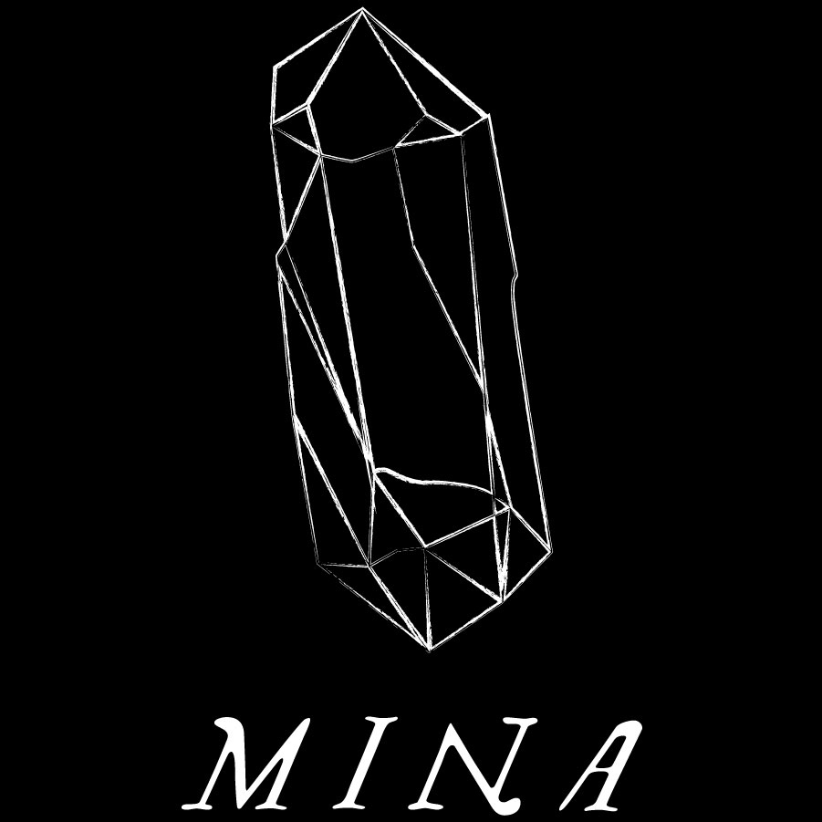

mina aims to bring together ravers and DJs
in a techno underground clubbing scene
for sexual and gender liberation
mina is hedonistic and non-reproductive
mina is techno-quantum beats
mina is sex positive
mina is suspension
mina is a rave
mina is a Lisbon-based queer feminist sex-positive rave focused on techno music.
Born out of a collaboration between marum, co-founder of the artist platform Rabbit Hole, and with Violet and Photonz, the co-founders of Rádio Quântica, it soon became a collective gathering a diverse group of both upcoming and established DJs, producers and ravers that catalyze alternative experiences in the clubbing scene while promoting an important debate on clubbing, music and community politics.
In the spawn of just one year, the mina collective has grown to become a notable name in the Lisbon underground clubbing scene, fighting actively for sexual and gender liberation in the electronic music culture. The eclectic, ravey and techno-oriented sonic signature of mina, with line ups that combine the participation of its residents, local and international guests, fills the venues with bodies, sweat, smoke and other fluids, together in a spirit of radical acceptance.
mina attracts hundreds of ravers to its smokey and strobing parties in Lisbon, yet it has expanded its experience outside of Lisbon with invitations to participate in showcases, collaborations with international like-minded parties, collectives, clubs and festivals. All mina events feature a dark room, non-gendered toilets, ravers’ care corner (an info-point that also provides food, condoms, lube, earplugs, etc.), door policy and zero tolerance to any form of discrimination or violence, in order to create safer spaces for sexual, gender and bodily disorientations.
General Enquiries | Bookings:
Pedro Marum -
pedro@minasuspension.com
